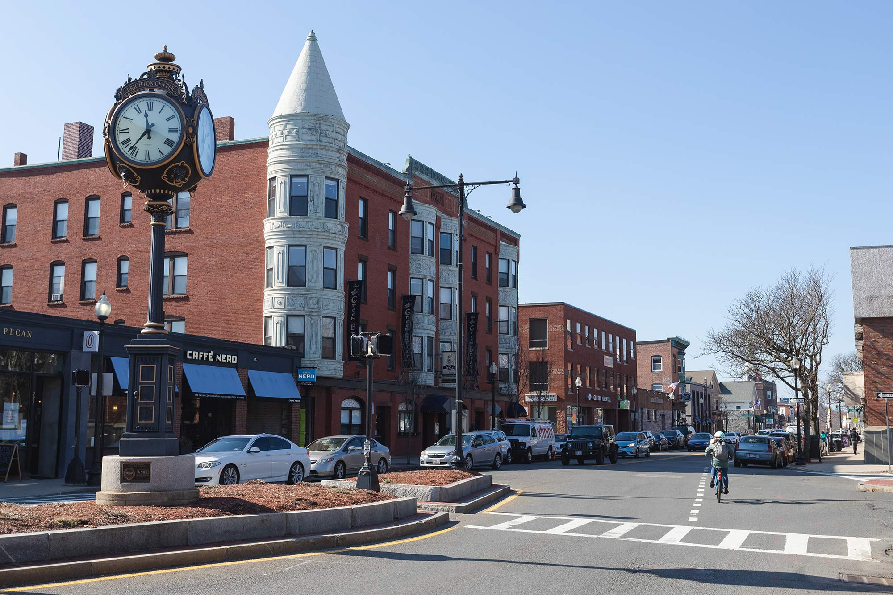
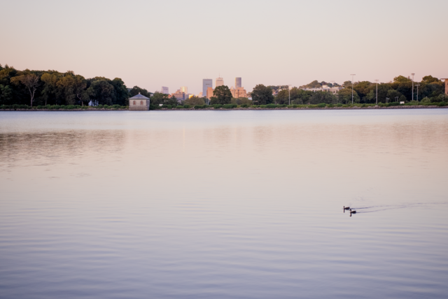

<!DOCTYPE html>
<html lang="en">
    <head>
        <title> Brighton Trivia </title>
    </head>
</html>
<body>
    <h1>Brighton Trivia Quiz</h1>
    <figure>
        
        <figcaption><em>Washington Street in Brighton Center. Photo by Jacob Chang Rascle (Boston University Comm '22)</em></figcaption>
    </figure>
    <h2><em> Do you know these fun facts about Brighton?</em></h2> 

<ol>
    <li><p>When was Brighton founded </p> </li>
    <ul>
        <li>A. February 14th, 1857</li>
        <li>B. July 27, 1893</li>
        <li>C. August 3, 1824</li>
        <li>D. February 24, 1807</li>
    </ul>
    <li><p>What is Brighton named after?</p></li>
    <ul>
        <li>A. Named after famous singer Daley Brighton</li>
        <li>B. Named after the English city of Brighton</li>
        <li>C. Named after a popular pastor at the time John Brighton</li>
        <li>D. Named after a local indigenous group </li>
    </ul>
    <li><p>Where is this photo taken from?</p></li>
    <figure>
           
        <figcaption><em>Photo taken by BrightonCreative in August 2023.</em></figcaption>
    </figure>
    <ul>
        <li>A. Fresh Pond</li>
        <li>B. Brookline Reservoir Park</li>
        <li>C. Chestnut Hill Reservoir</li>
        <li>D. Jamaica Pond</li>
    </ul>

    <li><p>What river separates Brighton from Cambridge and Watertown?</p></li>
    <ul>
        <li>A. Charles River</li>
        <li>B. Merrimack River</li>
        <li>C. Brighton River</li>
        <li>D. Watertown River</li>
    </ul>
</ol>
<h3>Finished!</h3>
<a href="./answers.html">See answer key</a>
</body>